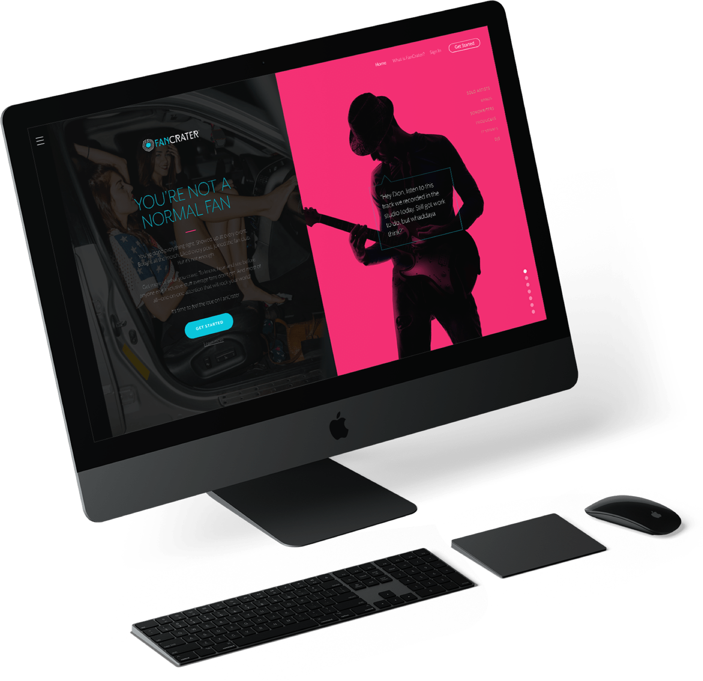
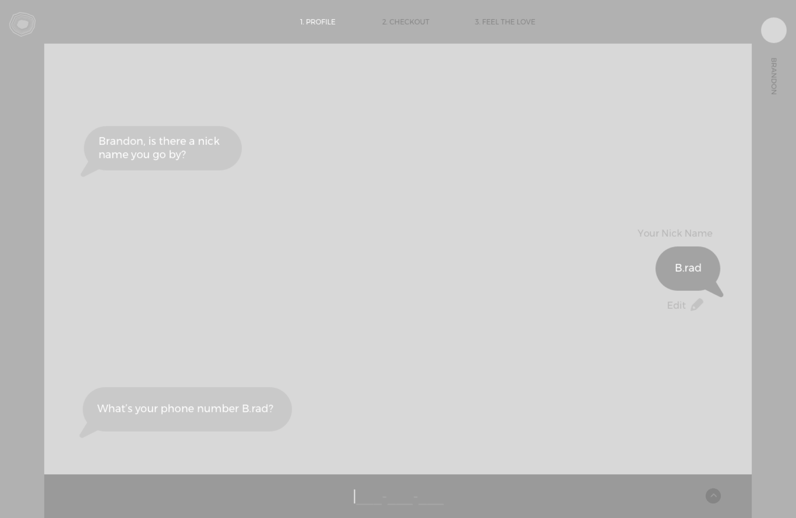

A Web and iOS App to Unite Superfans & Superstars

Client: FanCrater
FanCrater is an ambitious social platform aimed at audiences of nearly every age. The goal: bring together notable people and groups with their most loyal, and vocal fans. It’s nothing like a traditional fan club—it’s an entire ecosystem of features that facilitate one-on-one interactions.


My Role: Website UX, UI and App. Onboarding UX, UI

Project Type: Web and iOS Application
A Web and iOS App to Unite Superfans & Superstars
Client: FanCrater
My Role: UX, UI and App. Onboarding UX, UI
Project Type: Web and iOS Application
FanCrater is an ambitious social platform aimed at audiences of nearly every age. The goal: bring together notable people and groups with their most loyal, and vocal fans. It’s nothing like a traditional fan club—it’s an entire ecosystem of features that facilitate one-on-one interactions.
FanCrater called on me to help put in place foundational design pieces, and various app prototypes.
FanCrater sought to carve out a place for recognizable people and groups (Notables, as FanCrater called them) with their most loyal supporters (Superfans.) Superfans paid a monthly subscription fee to gain access to a Notable’s content which included exclusive video, audio, and more.
I collaborated with FanCrater to help them put in place foundational design pieces such as a marketing website, and native/web app prototypes.
FanCrater successfully launched the platform but ultimately decided to sunset the project for reasons beyond design, marketing, development etc. Knowing this, the UX and UI work I helped the team create are valuable artifacts worth examining. Enjoy!
Detail: Promotional website tone-setting imagery.
Detail: Promotional website “What is FanCrater?” page.
App Detail: Browsing Notable’s for which to subscribe.
All together now
FanCrater cast a wide net regarding who their idea user was: notable people, groups, and brands, as well as Superfans of many ages and interests.
On the Notable side
• Brand, person, or group (musicians to start)
• Have a following of some sort
• Interested in monetizing their fanbase
On the Superfan side
• Men and women aged 14+
• Varied interests (music to start)
• Seeking more or advance access to celebrities or personalities they admire
The concept
The marketing website was one of the first items I was asked to help with. We used this as primarily a means to inform Superfans about the benefits they could expect to enjoy, some of which being: advance access to superstar news, one-on-one communication via audio, video and so much more.
The look
One of the core objectives was to show a diversity of people and industries to communicate to users what they could expect when they signed up. I decided to incorporate silhouetted figures that are easy to recognize based on their shape, but keeping them dynamic and organic to convey energy and motion.
The details
The What is FanCrater section was used to go into greater detail about how FanCrater works. I used varied images set within an irregular grid to immerse the viewer. Some sections allow the viewer to dive deeper with added interactivity and motion to enhance the viewing experience. See below.

I also helped FanCrater unite Superfans and notable people by creating a comprehensive app onboarding experience.
The flow: Notables promoted their FanCrater page (where Superfans have access to all their audio, video clips etc.) via their social media channels. From there, Superfans followed a link where they arrived at a branded page where fans can either Sign In or Create an Account.
Flow: Superfan onboarding
Iterating the onboarding wireframe
The Sign In/Account creation form used dynamic form fields—where fields change based on user input from a previous field. To this end, new and existing Superfans started by entering their email address. If the email address was recognized, the user was presented with a password field. If the email address wasn’t recognized, the user was asked for their full name and other basic account creation details. After these few fields were completed, an account was created straight away. (fig. 1)
After users created an account there was a variety of information we still needed to collect… phone number, street address etc. I approached the challenge from the vantage point of how people are accustomed to interacting and communicating with one another everyday. The concept: allow prospective customers to progressively onboard and provide this additional information via a chat-inspired “form.” We’ll call it extended conversational onboarding. (fig. 2)

Fig 1: A singular form catered to new and existing users using dynamic form fields.
Fig 2: Conversational onboarding was used to collect further important information later on.
Conversational onboarding: Users enter responses at the bottom and edit by clicking the pencil icon to the right of their entry.

Conversational onboarding: Collecting information that’s more sensitive in nature takes on a more commonplace aesthetic.
Further than onboarding
Subscribing to Notables
I designed an extension of the onboarding experience that would enable Superfans to search for and subscribe to people they were interested in following. This flow was meant to be accessible any time from within the account holders dashboard. I built a partially interactive prototype that allowed me to explore styling of some of the interactive elements.

Notable Search: Users search and browse Notable people to subscribe to with filtering and sorting capability.
Hindsight is 20/20
Creating a comprehensive flow that catered to prospective customers who weren’t US-based was challenging.
Insights
FanCrater has been sunsetted as a platform but the opportunity to work with the team and the work I performed are still valuable experiences to have undergone. The conversational onboarding hadn’t reached a point of implementation but was well received by the FanCrater team.
Challenges
Creating a comprehensive flow that catered to prospective customers who weren’t just US-based was challenging. I also learned that even a standard login form can make use of dynamic fields to simplify the Sign In/Create Account process.
Lessons
To take care and not reinvent the wheel—use design patterns that are tried and true, but be cognizant of the fact that it’s good to know when to push boundaries and try new things.
Up Next
Scientific Information Design Gets an Upgrade